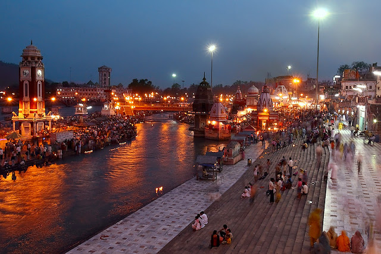
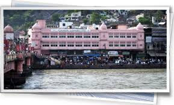
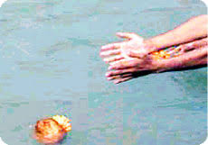
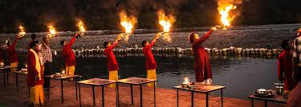
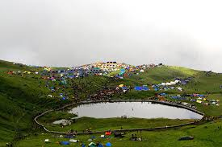
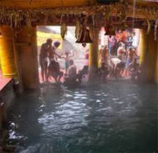
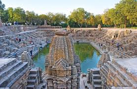
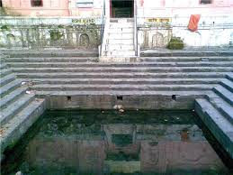
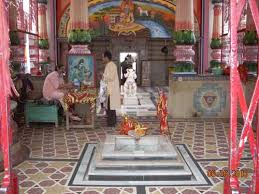
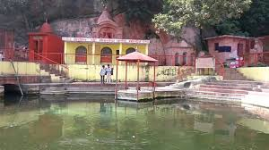

The Hindus believe that a holy bathe into the sacred water of the Ganga achieve "Moksha". During the battle for nectar between Lords and Demons a few drop of nectar fell down on the Earth at four places. These sites are known as Haridwar, Allahabad, Nasik and Ujjain. Since then it is the belief of the Hindu followers that the 42 Day of the Kumbh Mela these rivers change into "Amrit".
Har Ki Pauri Ghat

The Har ki Pauri ghat was built up by the ancient king Vikramaditya in the remembrance of his brother.The Harki Pauri Ghat also popular as Brahmakund. The followers don't forget to take a holy bathe into the river. The Ghat is lighted up every evening at the time of Maha Arti.
Gau Ghat

The Gau Ghat is situated on the southern part of the Subhash Ghat. Mythologically, there was a cow known as "Kamadhenu" that fulfills the wishes of the desires. The people reach at this site to grant forgiveness for the sin of cow killing for foods. These formal events were celebrated with the holy act of a
donation of a cow. The act of killing of a cow is similar, of killing to a Brahmin. On any religious occasion people crowds the Gau Ghat for prayer. There is a fact that the ashes of Indira Gandhi, Jawaharlal Nehru and Mahatma Gandhi were blew at this ghat.
Asthi Parvath Ghat

The Asthi Parvath Ghat is located in the south of the Ganga temple. Peoples float the ashes of the dead persons in the sacred water of Ganga at this Ghat. They believe that as the 60000 thousand sons of Sagara got salvation in the cool water of Ganga. People first do the prayer and then they blow the ashes of their kin in the river.
Triveni Ghat

Triveni Ghat is situated bank of the holy river Ganges. This scared ghat used for bath for most of pilgrims. The main daily event of the attraction is the evening Aarti of Goddess Ganga also commonly called as "Maha Aarti". You can see the devotee's offers prayer during aarti. Triveni Ghat, a confluence of three holy significant Rivers the Ganges, the Yamuna and the Saraswathy, is a most revered sacred bathing spot in Rishikesh and is situated on the banks of Ganges River. It is of belief that those who take a dip in Triveni Ghat will have release, a relief from all sins carried out; the water here has the power to purify them.
Nanda Kund

Nanda Kund is a charming lake located at the foothills of the Nanda Devi Peak. It is also known by the name Devi Kund. According to legends, a mythical character named Nanda took a bath in the lake and attained the status of a ‘Devi’ (Goddess). This lake is hence considered as divine.
Tapt Kund

Tapt Kund is a natural spring situated at Badrinath, in Chamoli District. It is said to be the abode of Lord Agni. Pilgrims take a holy dip in the Tapt Kund before entering the Badrinath temple. The spring is believed to possess curative properties.
Surya Kund

Situated next to the Yamunotri Temple in the Garhwal Region, Surya Kund is a hot water pool that derives its name from Surya (Sun god), father of Yamuna. This well-known thermal spring has a temperature of 190 F and is known for its curative properties.
Rishi Kund

Rishi Kund is an ancient pond situated close to Triveni Ghat in Rishikesh. The pond is related to the Kubz Saint, who was blessed by Goddess Yamuna by saturating this pond by its water. It reflects the temple of Ragunath, dedicated to Lord Ram and his consort, Sita.
Sati Kund

Sati Kund lies on Kankhal - Jwalapur Road in Haridwar. It is one of the pilgrim spots where Sati Devi, Shiva's consort as well as the daughter of Daksha Prajapati, is said to have burnt herself. Legend has it that Prajapati conducted a Yagna and called every one for attending this except Lord Shiva. Being insulted with this, she burnt herself in the Yagna Kund (the sacrificial fire) which is widely known today as Sati Kund.
Narad Kund
Narad Kund is a recess in the Alaknanda River, near Tapt Kund in Badrinath, forming a pool. It is said that the idol of Lord Vishnu in the Badrinath temple was recovered by Adi Guru Shankaracharya from this kund.
Bheemgoda Kund

Located at about half a km upstream from Hari-ki-Pairi Ghat, Bhimgoda Kund is a place of much religious importance. According to a legend, it was here where
Bheem, the Pandava prince with one blow of his horse’s hoof drew water from the rocks.